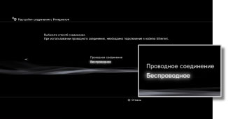
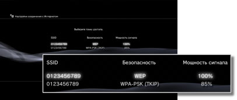
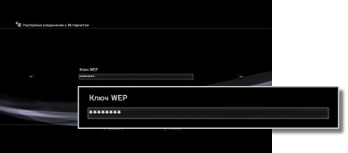

Настройки соединения с Интернетом (беспроводное соединение)
Эта настройка доступна только в системах PS3™ с функцией беспроводной сети LAN.
Задание способа подключения к Интернету. Настройки Интернет-соединения различаются в зависимости от сетевого окружения и используемых устройств. В следующей процедуре описывается выполнение обычной настройки при беспроводном подключении к Интернету.
1. |
Убедитесь, что настройки для точки доступа выполнены.
Убедитесь, что недалеко от системы располагается точка доступа, подключенная к сети с услугами Интернета. Настройки для точки доступа обычно выполняются с помощью компьютера. Для получения дополнительной информации обратитесь к специалисту, который устанавливал или обслуживает данную точку доступа.
|
2. |
Подтвердите, что кабель Ethernet не подключен к системе PS3™.
|
3. |
Выберите  (Настройки) > (Настройки) >  (Настройки сети). (Настройки сети).
|
4. |
Выберите [Настройки соединения с Интернетом].
Выберите [Да] на экране, отображающем предупреждение о том, что будет произведено отключение от Интернет.
|
5. |
Выберите [Простые].
|
6. |
Выберите [Беспроводное].

|
7. |
Выберите [Сканировать].
Отображается список точек доступа в диапазоне системы PS3™.
В зависимости от модели используемой системы PS3™ может отображаться параметр [Автоматически]. Выберите параметр [Автоматически], если используется точка доступа, поддерживающая автоматическую настройку. В случае выполнения инструкций, отображаемых на экране, все необходимые настройки выполняются автоматически. Для получения информации о точках доступа, поддерживающих автоматическую настройку, обратитесь к местному продавцу.
|
8. |
Выберите точку доступа, которую требуется использовать.
Точкам доступа назначается идентификационное имя SSID. Если неизвестно, какую SSID использовать, или если SSID не отображается, обратитесь за помощью к специалисту по настройке и обслуживанию точек доступа.

|
9. |
Проверьте SSID для точки доступа.
|
10. |
Выберите требуемые настройки безопасности.
Типы настроек безопасности зависят от точки доступа. Обратитесь к специалисту по настройке и обслуживанию точки доступа за сведениями о том, какие настройки следует выбрать.
|
11. |
Введите ключ шифрования.
Ключ кодировки отображается в виде [*]. Если ключ шифрования неизвестен, обратитесь за помощью к специалисту, который устанавливал или обслуживает данную точку доступа.

После ввода ключа кодировки и подтверждения сетевой конфигурации отображается список параметров.
В зависимости от используемого сетевого окружения может потребоваться дополнительная настройка для PPPoE, прокси-сервера или IP-адреса. Подробнее об этих настройках см. в сведениях поставщика услуг Интернет и документации, поставляемой с используемым сетевым устройством.
|
12. |
Сохраните настройки.
|
13. |
Проверьте соединение.
При выборе [Тест - соединение] система выполнит попытку подключения к Интернету.
|
14. |
Подтвердите результаты проверки соединения.
При успешном подключении отобразится информация о сети.
|
Подсказки
- В случае сбоя соединения следуйте инструкциям на экране, чтобы проверить настройки. См. Также см. сведения от поставщика услуг Интернет и документацию, поставляемую с используемым сетевым устройством.
- Если соединение тестируется немедленно после выбора [Автоматически] > [AOSS™] в шаге 7, настройка маршрутизатора может быть не завершена, поэтому может произойти ошибка при установлении соединения. Подождите примерно 1 - 2 минуты перед тестированием соединения.